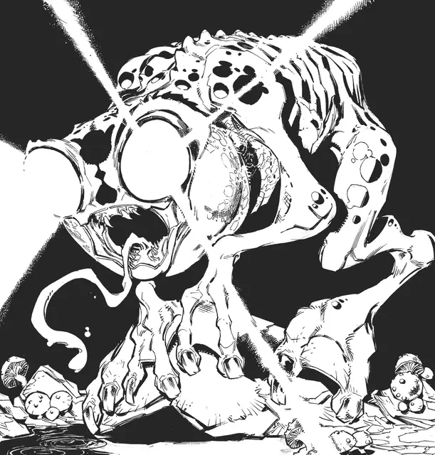

Блайндхейм
Blindheim
Средний Гуманоид, хаотично-нейтральный

Класс Доспеха 14 (природный доспех)
Хиты 26 (4к8 + 8)
Скорость 30 футов
| мод | спас | ||
|---|---|---|---|
| СИЛ | 13 | +1 | +1 |
| ЛОВ | 16 | +3 | +3 |
| ТЕЛ | 15 | +2 | +2 |
| мод | спас | ||
|---|---|---|---|
| ИНТ | 8 | −1 | −1 |
| МДР | 10 | +0 | +0 |
| ХАР | 9 | −1 | −1 |
Навыки Атлетика +3, Восприятие +2
Чувства пассивное Восприятие 12
Языки Глубинная речь
Опасность 2 (450 опыта)
Бонус мастерства +2
Особенности
Сияющие глаза. Когда его глаза открыты, блайндхейм излучает яркий свет в 60-футовом конусе, и тусклый свет на дополнительные 60 футов. Он выбирает направление данного конуса в конце каждого своего хода. Все существа, которые могут видеть блайндхейма, получают помеху при бросках атаки, пока находятся в конусе яркого света и в пределах 15 футов от блайндхейма. Существа с особенностью Чувствительность к солнцу, способные видеть блайндхейма, совершают броски атаки с помехой в любом месте в пределах конуса яркого света.
Действия
Укус. Рукопашная атака оружием: +4 к попаданию, дистанция 5 фт., одна цель. Попадание: 5 (1к6+2) колющего урона.
Сияющий заряд. Сияющая энергия извергается из глаз блайндхейма в 15-футовом конусе. Каждое существо в этой области должно преуспеть в спасброске Телосложения Сл 12, иначе получит 7 (2к6) урона излучением и будет ослеплено до конца следующего хода блайндхейма. Существа с особенностью Чувствительность к солнцу совершают данный спасбросок с помехой.
Описание
Возвращаясь в Подземье, я всегда забочусь о том, чтобы взять с собой священный символ Пелора, на случай если встречусь с этими штуками. Они могут быть полезны, если хоть один из них не возражает сыграть роль мстительного клерика бога солнца.
– Маг Морденкаинен.
Эти лягушкоподобные гуманоиды обладают способностью излучать резкий, ослепляющий свет из своих глаз. Селящиеся на окраинах Андрердарка, блайндхеймы – любящие засады оппортунисты, которых можно склонить к службе за плату едой и оружием из металла. Сияющие глаза блайндхейма делают этих существ уникальным источником света в глубинах Андердарка, и они достаточно ярки, чтобы помешать существам слабым к свету — или чтобы уничтожить их врагов.
Обжигающие глаза. Блайндхейм излучает обжигающий свет из своих злобных, выпуклых глаз. Интенсивность этого света близка к естественному солнечному свету, и может побеспокоить или прервать действия многих существ, привычных к тьме глубин. Если блайндхейм решает сфокусировать свой взор, эта энергия может даже обуглить плоть и кости.
Наемники-оппортунисты. Блайндхеймы очарованы рассказами и предметами с поверхности, в особенности если то растения и прочие порождения дикой природы. Они собираются в глубинах Подземья близ путей используемых торговцами и прочими бравыми путниками. Обычно они подходят к более сильным существам с осторожностью, говоря на сбивчивом, квакающем Глубинном диалекте, в попытке предложить свои услуги в обмен на свежую еду, металлическое оружие, и безделушки с поверхности. Однако, в превосходящей численности или сталкиваясь с существами выглядящими слабее, блайндхеймы зачастую нападают из засады, с целью забрать себе желаемое.
Странные изгнанники. Блайндхеймы повествуют о древних временах, в которые их народ ходил по поверхности. Согласно их сказаниям, их предки украли кусок солнца, после чего сбежали в Подземье и поглотили его, получив способность излучать сияющий свет из своих глаз.
Блайндхеймы боятся, что однажды солнце отправится под землю, чтобы свершить свою месть. Имея дело с жителями поверхности, они настаивают, что те никогда не расскажут солнцу о них, и осыпают бесчисленными вопросами о действиях солнца, его гневе, и том как оно относится к окружающим. Но жители поверхности, пытающиеся утешить блайндхеймов касательно их страхов, часто наносят этим созданиям сильную обиду. В умах блайндхеймов, солнце ни в коем случае не могло забыть их великую, героическую кражу, и все сказанное для развинчивания веры в то, что они остаются известны и грозны для всех кто живет на поверхности, гневит их.
Жалкие рабы. Некоторые из обитателей Подземье, в особенности дроу и куо-тоа, грабят поселения блайндхеймов в поиске рабов. Хотя свет из глаз этих существ представляет собой значимую угрозу для этих рейдеров, пойманный блайндхейм становится полезным живым оружием.